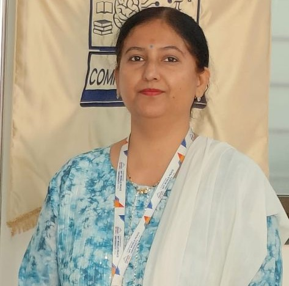

Prof. Anuradha Shantanu Kanade
Program Director & Associate Professor

Program Director & Associate Professor
Dr. Anuradha Kanade is the Program Director of the Department of Computer Science and Applications at Dr. Vishwanath Karad MIT World Peace University, Pune. She holds a Ph.D. from Savitribai Phule Pune University, an M.Phil., MCA, MBA (Business Analytics), and a B.Sc. (Physics). With over 24 years of academic and industry experience, she has made significant contributions to teaching, research, academic leadership, and curriculum development. She is starving for the excellence to ensure the overall growth of the students, department and faculty members. Her teaching philosophy emphasizes learner-centric, value-based, and outcome-oriented education that nurtures technical competence, ethical values, innovation, and lifelong learning. She is passionate about motivating students through research, industry interaction, internships, and project-based learning Through her contributions in research, patents, publications, academic leadership, and industry collaborations, she actively supports MIT-WPU’s vision of promoting excellence in education, innovation, research, and holistic development of socially responsible global professionals. She is an approved Ph.D. supervisor and has guided research scholars in emerging areas of computer science. Dr. Kanade has authored 50+ research publications, several books, and holds multiple Indian and UK patents, with a number of them granted. She has successfully completed funded research projects and actively collaborates with academia and industry to promote innovation and applied research. As Program Director, Dr. Kanade has been instrumental in strengthening academic quality, fostering industry collaborations, organizing international conferences, faculty development programs, hackathons, and research initiatives. She is an active member of professional bodies, serves on Boards of Studies, and regularly contributes as a keynote speaker, session chair, reviewer, and mentor. She is committed to nurturing industry-ready graduates through outcome-based education, interdisciplinary learning, and research-driven academic excellence.
Profiles